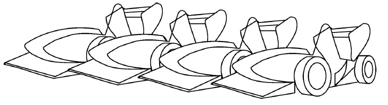

Business Plan Analysis
The Business Plan Presentation event is one of the three static events at Formula Student competitions. The objective of the BPP is to evaluate the team’s ability to develop and deliver a comprehensive business model which demonstrates their product – a prototype race car – could become a rewarding business opportunity. The judges are treated as if they were potential investors or partners for the presented business model.
The Idea

The idea of our BPP is to provide an electric racecar to the tracks which can be used by anyone with the use of a mobile app. In the world where the terms 'leasing' and 'renting' are becoming more and more popular, our company would bring these ideas to the karting industry. Users can download the app, book their race, compete with friends, join a large community and pay with just a tap.
Business Model
Our company manufacture and owns the racecars which are given to the tracks to operate for a fixed term. Tracks are responsible for managing charging and guaranteeing the safety of the racers. Maintenance & support is covered by our company. Racers use and pay for our racecars through the app. Tracks are paid for their services by a percentage of the income.
The Application
The idea of our BPP is to provide an electric racecar to the tracks which can be used by anyone with the use of a mobile app. In a world where the terms 'leasing' and 'renting' are becoming more and more popular, our company would bring these ideas to the karting industry. Users can download the app, book their race, compete with friends, join a large community and pay with just a tap.
Download the demonstration app here
Production Facility & Factory
Our factory will be a modern production facility based on simplicity and efficiency. During the manufacturing process the car passes from numerous departments where all the specialized work is made. The U-Shaped assembly line guarantees maximum flexibility, ergonomics and better allocation of work while with the addition of more workers we can produce more cars at the same facility.
Production Management

For each unit production, each department has some specified preparatory out-of-the-vehicle work to do that does not require the vehicle (e.g. front wing assembly) and some in-the-vehicle work which require work on the vehicle. In order to achieve the maximum efficiency of allocation of work both outside and inside the racecar, a project management study has been made using Gannt charts.
Environmental Footprint

Although electric vehicles are considered environmentally friendly, the lifecycle environmental impacts of electric cars are a topic of increasing controversy. In fact, despite there are no Greenhouse Gas (GHG) emissions directly attributed to the vehicle, the total CO2 emission of electric vehicle depends on the share of renewables in the grid, from which the traction batteries are charged. Through a comprehensive study on our car's total emissions, we will select four countries each of which depends heavily on a particular type of energy, namely coal (Germany), nuclear energy (France), natural gas (Italy) and renewable energy (Sweden) in their energy mix.
|
KWh generated |
g CO2/kWh Fuel input |
g CO2/kWh output |
CO2 WtP |
CO2 in plant |
Total CO2 |
Coal |
0,06 |
18,9 |
855 |
1,047 |
47,354 |
49,01 |
Lignite |
0,098 |
30,24 |
976 |
2,963 |
95,637 |
98,7 |
Natural Gas |
0,055 |
16,74 |
410 |
0,927 |
22,708 |
23,635 |
Oil |
0,004 |
22,41 |
737 |
0,095 |
3,140 |
3,235 |
Nuclear |
0,051 |
25 |
27 |
1,278 |
1,380 |
2,658 |
Solar |
0,03 |
|
65,05 |
|
1,94 |
1,94 |
Wind |
0,072 |
|
9 |
|
0,652 |
0,652 |
Hydro |
0,013 |
|
3 |
|
0,038 |
0,038 |
Biomass |
0,03 |
|
194 |
|
12,5 |
12,5 |
Germany Total |
197,66 g |
|||||
Italy Total |
162,67 g |
|||||
France Total |
45,175 g |
|||||
Sweden Total |
17,947 g |
|||||
The more renewable sources that power the grid, the lesser the emission of GHGs. But even in countries that produce their electricity with a lot of GHG emissions, electric racecars produce less GHG emissions than an equivalent combustion car.
Check the booklet here
Financial & Market Analysis
Market Research

Our product aims to cover the huge gap between a kart and a formula student racecar. Providing much more than a go-kart, and giving to the public the oportunity for the first time ecer to taste a formula experience. Our goal is to make formula racing available to everyone and not only to the privileged few.
Consumer Research
Aristurtle thinks that this time limit does not allow kart drivers to enjoy racing to the fullest. We think that drivers should be free to drive as long as they want and charged later depending on how much they have raced. In order to know if the customers are satisfied with the time limit that tracks offer to them or if they are willing to drive more, we carried out a survey. We asked 244 people who visited Serres Autodrome on 20&21 April 2019.


Target Group
According to surveys, a 45% percentage of the aforementioned population, more than 333,6 million Europeans, belongs to a highly engaged and educated group, that is ambitious in its career and adventurous in trying new things. The average Experience Seeker is willing to taste new things and it is considered that these people tend to try hobbies that increase adrenaline levels.
More specific the 64.265% percent of our target group is aged between 14 and 64 years old, percentage which corresponds to 213 million. The package we offer is considered to be affordable for the average European. Moreover, a percentage of more than 6.5% of Europeans belongs to formula motorsport fans, a percentage that we expect to be increased.
As we become more and more specific, it is important to mention that a percentage of 5% is actually active in motorsport, a percentage corresponding to a number of 10,68 million people, who are considered to be our actual potential customers in Europe.
Financial Analysis
As we become more and more specific, it is important to mention that a percentage of 5% is actually active in motorsport, a percentage corresponding to a number of 10,68 million people, who are considered to be our actual potential customers in Europe.
Check the complete financial analysis, expansion strategy and expected income here
Explanatory comments and instructions about the final financial analysis
Graphic Design (C4D)
As part of the Marketing Team, part of my job was to create content that will make our presentations more realistic and comprehensive to the audience. The video above is a virtual assembly of the racecar which was shown at the Design Reveal event of our 4th racecar, Thetis. The scope of this video is to show how the racecar is made and to make clear where its part that was shown at the presentation is situated in the racecar.
Apart from the videos for the presentation, I made also videos for the final peresentation at the Formula Student competitions. In these videos, I gave extra attention to the final detail and the car is shown with its final colors and design. Below you can see the car presentation video with which we introduced our product to the judges and by clicking here, you can check the virtual tour of our virtual factory and assembly line
In the videos below you can see some videos that I made for the Design Reveal event of our 4th racecar, Thetis.
Chassis
Accumulator Container Assembly
Planetary System
Dashboard